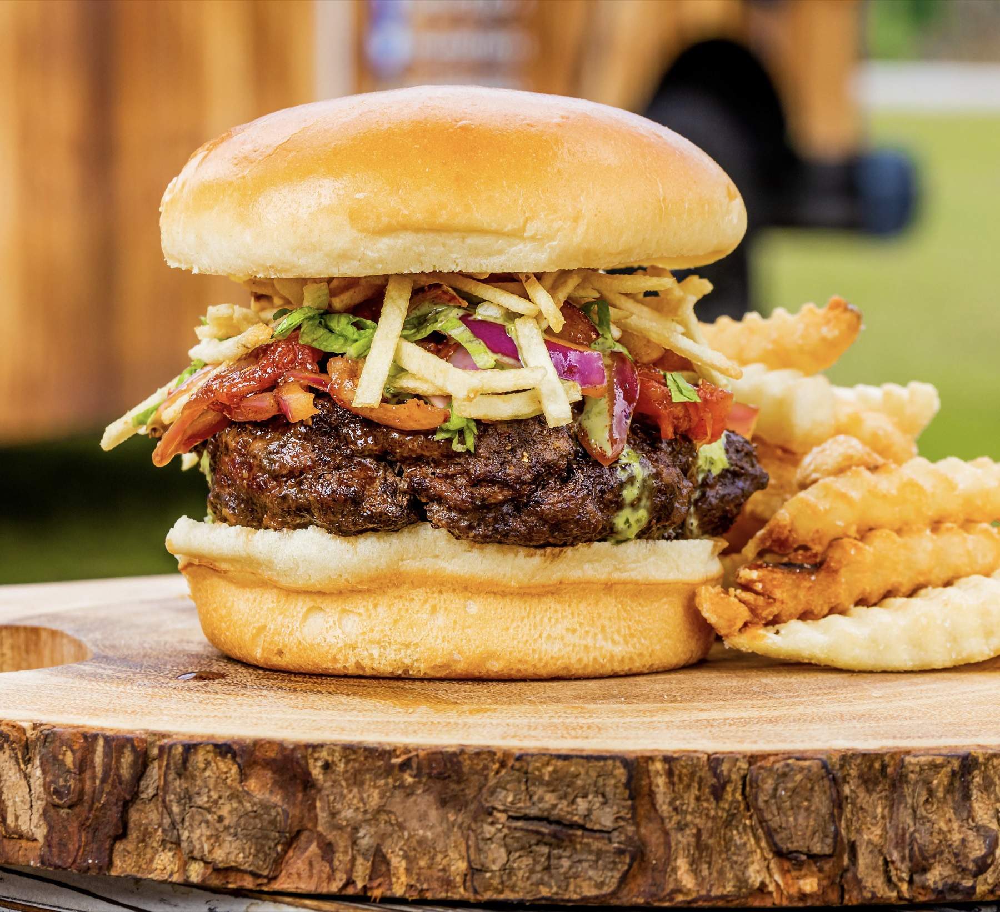
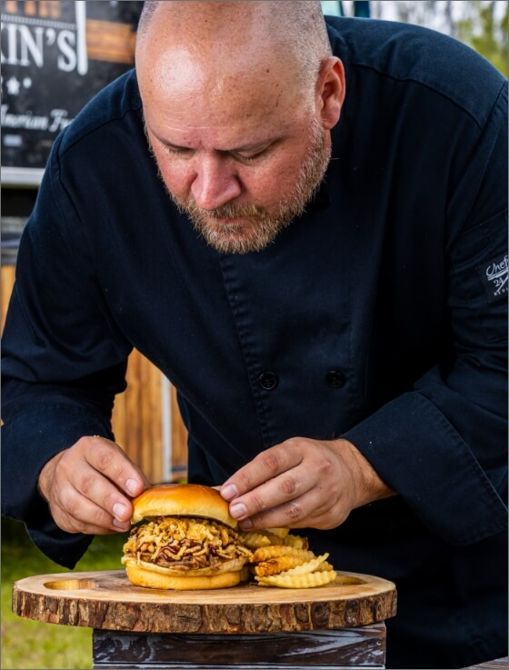
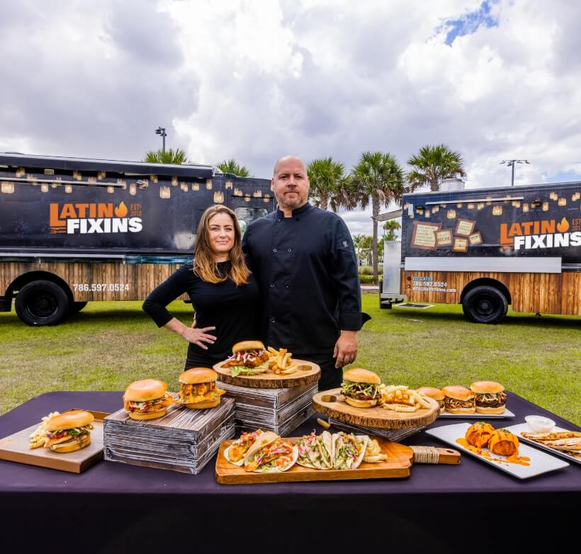

Family Owned. Boldly Flavored.
From a small catering startup to South Florida's award-winning food truck.

Born in a Kitchen. Built on Bold Flavors.
Latin Fixin's started in 2012 as a catering company. A year later, we expanded by adding our first food truck — "Big Fixins" — to serve as a mobile kitchen. Since then, we've continued growing, adding new trucks to our fleet, partnering with venues, and participating in some of South Florida's largest events.
Today, you can find us at The Doral Yard, open seven days a week, serving up our signature American comfort food with a traditional Peruvian twist.
We take pride in delivering delicious food with impeccable service and can cater events of any style — whether with or without our food trucks. Our goal is to make every event a unique and unforgettable experience.

Family Owned and Operated
Latin Fixin's is a family-owned and operated business since the beginning.
Chef Alex is originally from Perú. He started his career in the corporate world, traveling to set up restaurant openings in different states and countries. In 2011 he purchased a small café in Downtown Miami that later evolved into what Latin Fixin's is today.
Along with his wife Kiara, they continue to grow the business together — currently employing young men and women and teaching them the ropes of the hospitality industry.
Founded
Started as a catering company, expanded with our first food truck a year later.

Food Truck Wars Champions
Perfect score winner — 2019 Port Saint Lucie Food Truck Wars.
Days a Week
Open daily at The Doral Yard.
Come Find Us at The Doral Yard
Or book us for your next event — corporate, private, or anything in between.